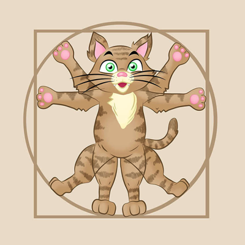
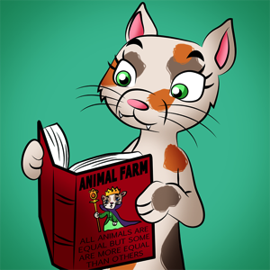

Career Guidance
What is your purpose in life?
Pop in for a chat with our career advisers. Find out what kind of career may be suited for you so you can have a happy and satisfying life as well as serving others in society.
Purr City minimum wage
Purr City is proud to be guaranteeing the Purr City minimum wage to all working cats. This is currently 8 purr coins an hour, as per the Purr Minimum Wage Act 2015. An Act is a law which is made and voted in by cats. We aim to lift all cats out of poverty so that they can afford the lifestyles they deserve.
- Entrepreneur: Think of new ventures and start your own business. The world is your fish!
-  Furtrimmers and groomers: Cats like to look good! Give pedicures and hear cats purr in delight! Pedicure comes from the Latin word pedis meaning of the foot and curare means to take care of. This is also where we get the word pedestrian from.
- Politician: Help govern Purr City. Assist in the city's education, healthcare, finances and housing decisions. Politician comes from the Greek word polis meaning city, as they look after the things that concern the city or state. We also get the word metropolis from this, which means a large, busy city.
- Scientist: Advance knowledge. Discover new things through observation and experiments.
- Teachers: Inspire the next generation of cats.
- Writer: Write literature, history, or fiction to entertain and educate cats. Literature can be creative written pieces of work like poems, or stories that show what life was like in their society through their characters and environment - these often have moral messages of good and bad.